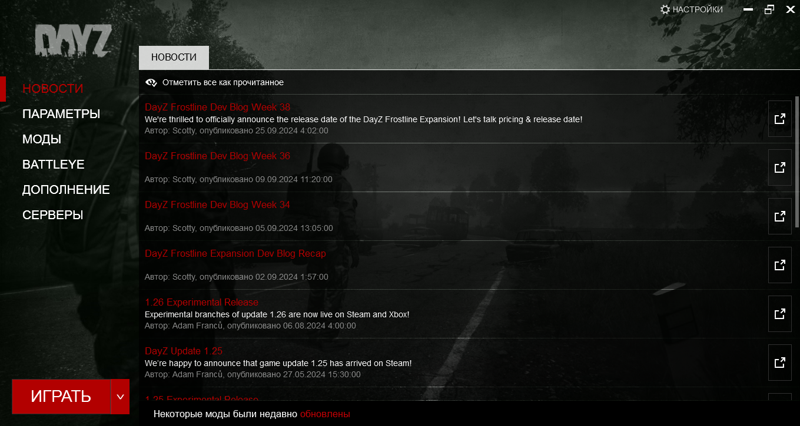
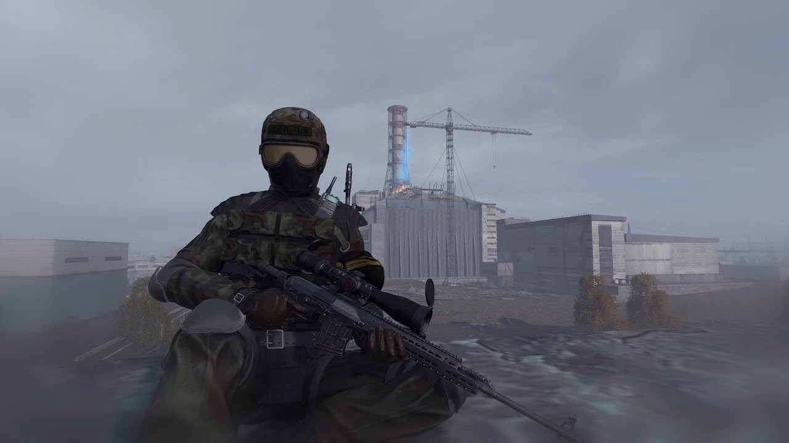
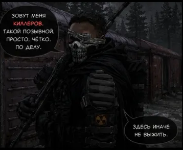
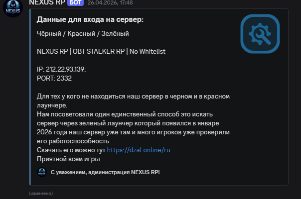

𝐍𝐄𝐗𝐔𝐒 𝐑𝐏
Уникальный гибрид вселенной S.T.A.L.K.E.R. и хардкорных механик DayZ. Аномалии, артефакты, мутанты, войны кланов и полный RP-откуп. Твой путь начинается в Зоне — выживи или стань легендой.
О ПРОЕКТЕ
NEXUS RP — это авторская сборка, которая объединяет мрачную постапокалиптическую атмосферу S.T.A.L.K.E.R. и жёсткие реалистичные механики выживания из DayZ. Мы создаём уникальный игровой опыт, где каждое ваше решение влияет на развитие сюжета и мир вокруг. Полное погружение в роль, живой динамический мир, враждующие фракции и непредсказуемые аномалии — добро пожаловать в Зону.
ОСОБЕННОСТИ
Радиация и аномалии
Исследуй опасные зоны, находи артефакты и избегай смертельных аномалий.
RP-фракции
10 уникальных группировок со своей идеологией и возможностью влиять на ход войны в Зоне.
Кастомный мир
Расширенная карта Зоны: от Припяти до Кордона, секретные бункеры и подземелья.
Экономика и квесты
Динамические цены, торговцы, бартер и захватывающие сюжетные задания.
DayZ-механики
Болезни, переломы, кровотечения, износ оружия — реализм на максимуме.
VoiceRP
Полноценная голосовая ролевая игра с тактильной радиосвязью и эмоциями через команды.
СВЯЗЬ И ПРИСОЕДИНЕНИЕ
Discord
nexus-rp.zone
IP сервера
play.nexusrp.ru
Тикеты
@Support в Discord
УСТАВ ЗОНЫ ДЛЯ ВЫЖИВАНИЯ В ЗОНЕ
Оглавление
КАК СТАТЬ СТАЛКЕРОМ

Установка DayZ
Приобретите и установите лицензионную версию DayZ Standalone через Steam. Убедитесь, что игра обновлена до последней версии.

Скачать мод-пак
Перейди в наш Discord-канал, найди раздел #моды и скачай лаунчер NEXUS RP. Установи все необходимые моды автоматически.

Регистрация
Заполни анкету на сайте или в Discord, создай уникального персонажа и дождись одобрения администрации.

IP сервера
play.nexusrp.ru (порт 2302). Скопируй IP и вставь в лаунчер DayZ. Добро пожаловать в Зону!
Подробная видеоинструкция
Нажми на плеер, чтобы посмотреть гайд по установке и настройке модов.